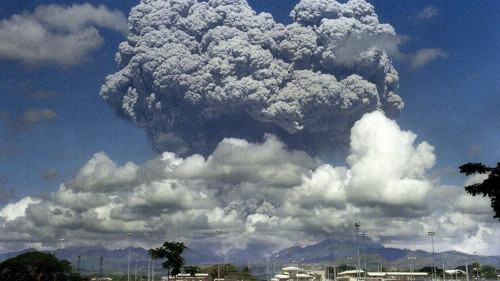
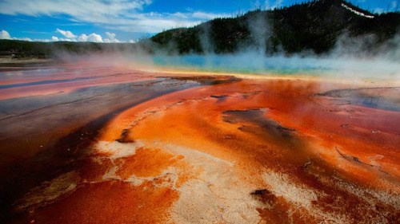
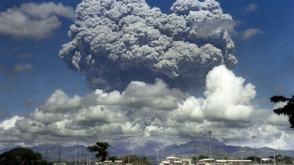
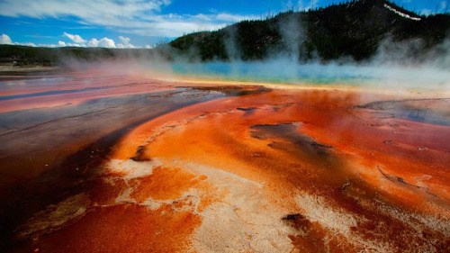

Vulcões
é uma abertura na crosta terrestre (camada superficial da Terra) por onde são expelidos para a superfície materiais originários do manto. Estes materiais, em geral, surgem em estado líquido-pastoso e incandescente recebem o nome de magma. É um material presente na camada imediatamente abaixo da crosta terrestre – o manto. No entanto, da fenda do vulcão, também podem ser emitidos materiais gasosos, poeira e rochas em estado sólido.
 



Erupções Vulcânicas
A erupção vulcânica é um fenômeno da natureza, geralmente associado à extravasação do magma na superfície do planeta. As camadas de rochas formadas por erupções magmáticas são chamadas de "derrames", pois a rocha espalha-se e solidifica-se na superfície do globo.
Os vulcões classificam-se em dois tipos no que diz respeito a sua atividade:
- Os ativos: São aqueles que apresentam atividade ou instabilidade, e que correm o risco de entrar em erupção. Esses vulcões podem provocar abalos sísmicos e liberar gases na atmosfera.
- Os inativos: são aqueles vulcões que já entraram em erupção, mas que atualmente não apresentam mais atividade. Eles são considerados extintos.
Existem cerca de 1500 vulcões ativos na terra e dentre esses surgiu uma nova categoria Os Supervulcões, estes com capacidade de extinguir uma civilização inteira.
O supervulcão de yellowstone, localizado no parque nacional de yellowstone é um grande exemplo disso e dizem estar na eminência de uma grande erupção, oque poderia lançar na atmosfera milhares de toneladas de poeira e fuligem afetando toda a população da terra gerando escassez de alimentos além de resfriar repentinamente todo o planeta podendo nos levar novamente a era do gelo.
Se algo assim acontecer seria o fim do aquecimento global e o início de uma idade do gelo. O resultado final resultaria no desaparecimento de plantas no planeta inteiro. Animais herbívoros que se alimentam de plantas iriam morrer de fome.
Os cientistas acreditam que uma grande erupção a nivel global acontessa a cada 100 mil anos e se estivermos perto desse período poderiamos ter uma dessas nas próximas décadas. Você acredita que algo assim poderia acontecer?